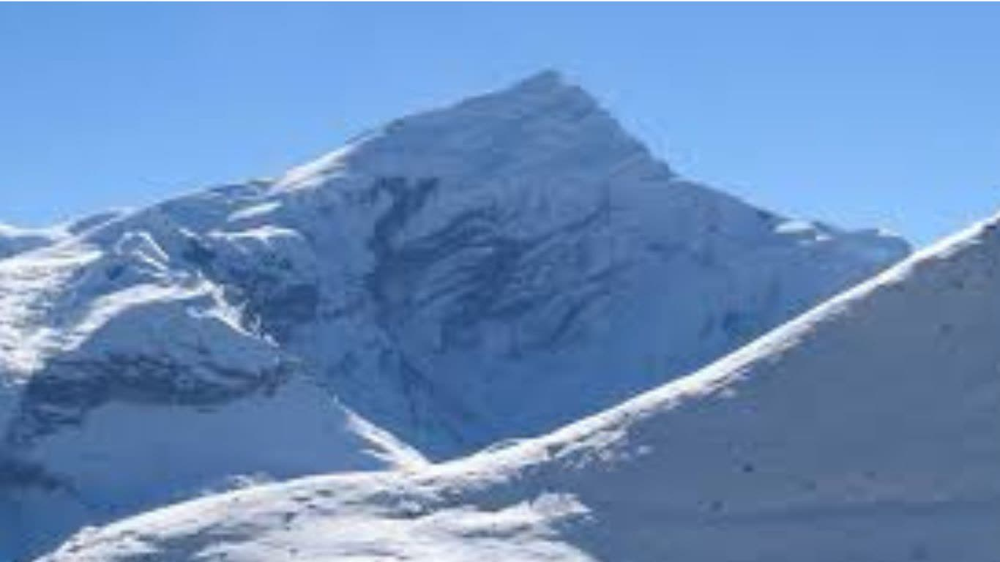
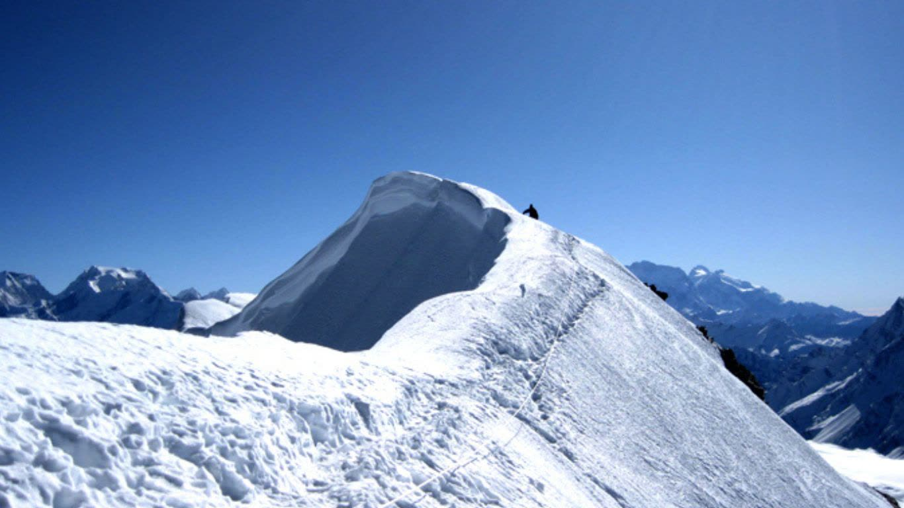
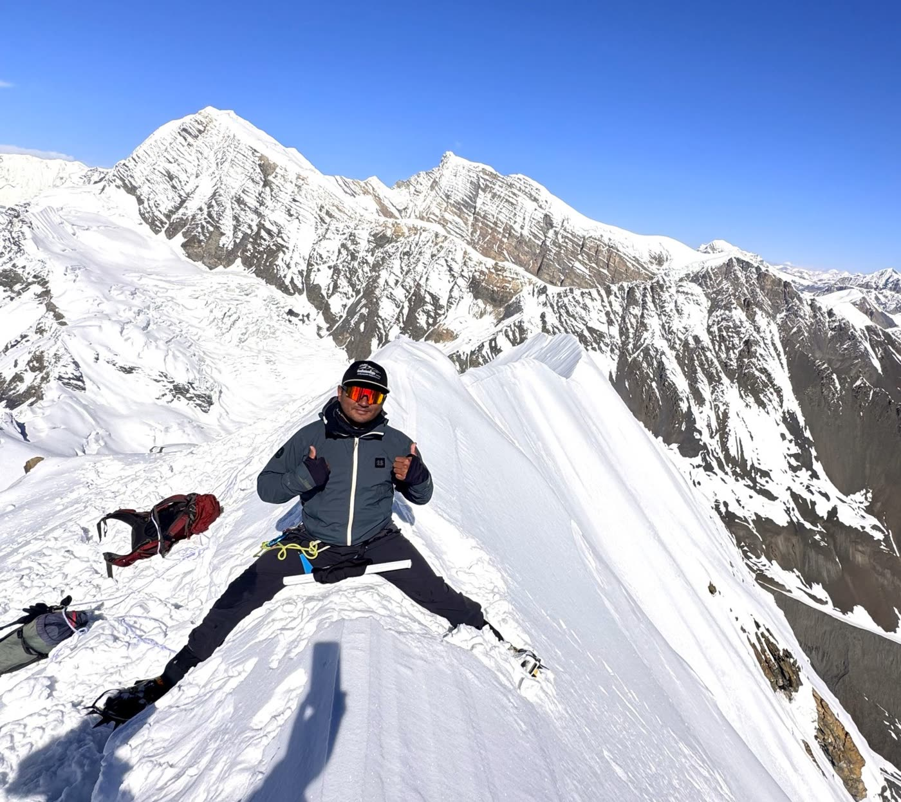
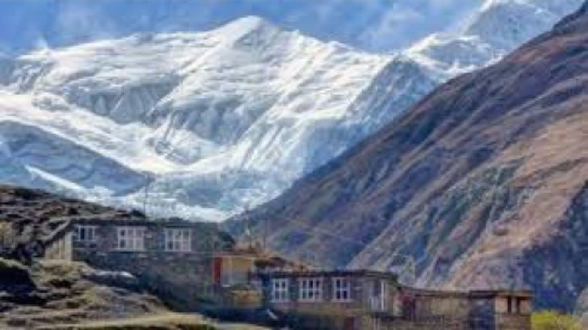
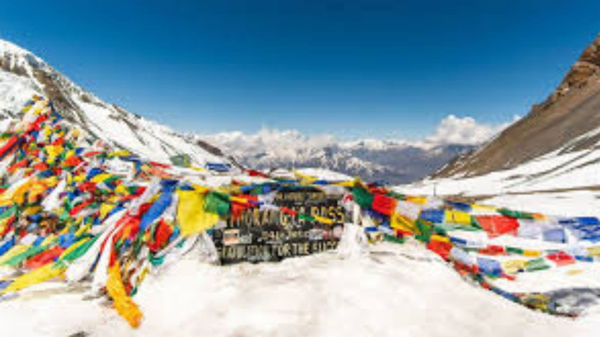
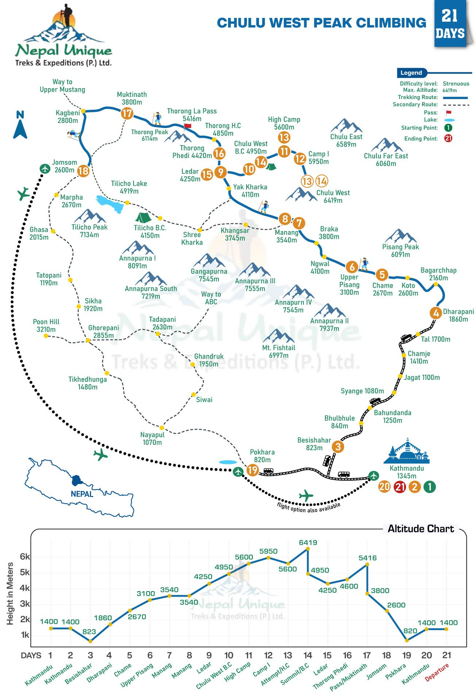

Chulu west peak climbing
Chulu West Peak Climbing adventure is considered to be one of the highly preferred trekking and climbing peaks in Nepal. Nepal Unique Treks answers questions about the Cost and Itinerary for 2025/2026.





Key Trip Facts
Trek Overview
Trip Highlights
Chulu West Peak Climbing Overview
Chulu West Peak Climbing adventure is considered to be one of the highly preferred trekking and climbing peaks in Nepal. Nepal Unique Treks answers questions about the Cost and Itinerary for 2025/2026. Sitting deep in one of the most jaw-dropping parts of Nepal, the Annapurna region, Chulu West Peak offers the best of everything: dramatic alpine scenery, rich Tibetan-influenced culture, and just enough climbing challenge to push your limits without going overboard. Besides, you also do not have to go in full Everest mode for this climb, as the highest point of the Chulu West Peak Climb is at 6,419 meters above sea level.
With Nepal Unique Treks & Expeditions, this won't just be a trek or peak climb. Besides, our team of professional and seasoned tour operators and guides ensures a journey full of adventures and new learnings. Furthermore, this 21-day Chulu West Peak Climbing package creatively blends high-altitude mountaineering with world-class trekking routes like the Annapurna Circuit and Tilicho Lake.
The peak climbing journey begins with a Kathmandu valley sightseeing, followed by a drive to Dharapani via Besisahar. From Dharapani, we begin the walking journey in the Chulu West Peak Climbing trekking map. Gradually, we pass through different traditionally settled remote villages, including Upper Pisang, Manang, Lather, before reaching the Base Camp. Finally, after crossing high camp and camp I, we will make our final stretch to the Chulu West Peak. After that, we slowly descend towards Thorong La Pass, Muktinath Temple, Jomsom, Pokhara, and then to Kathmandu.
This exciting and adventurous peak climbing trail takes 21 days to complete. Nevertheless, the Chulu West Peak Climbing package stands as one of the most thrilling, remote, and insightful walks in the Annapurna region. So, read the entire package detail and book the 21 Days Chulu West Peak Climbing package right away with Nepal Unique Treks & Expeditions.
Why Choose Nepal Unique Treks & Expeditions?
Choosing a local and certified peak climbing or expeditions agency is crucial for a safe and successful ascent on the Chulu West Peak trail. From organizing the package to arranging proper food and accommodation throughout the journey, climbers need all these to have a safe and adventurous ascent to the Chulu West Peak. With Nepal Unique Treks & Expeditions, you can expect a lot more than these advantages, and here they are:
Nepal Unique Treks & Expeditions offers seasoned and safety-focused guides with a valid license from the authorities.
We make sure to arrange proper acclimatization, organize a risk-free and careful journey, while providing deep insights about the trekking region.
From permits and porters to meals and camping gear, everything is managed for you so you can focus on the journey, not the planning.
We help the climbers learn more about the authentic cultures, traditions, and lifestyles of the people living in the Annapurna region.
With a focus on small groups, you’ll receive personalized attention, better acclimatization, and a more connected team dynamic.
Nepal Unique Treks supports local communities and follows Leave No Trace principles to protect the mountains for future generations.
Our professional Sherpa guides also support you with climbing skills training by providing you with hands-on training in ice axe use, rope techniques, and safety drills.
With glowing reviews, high success rates, and repeat clients, Nepal Unique Treks is known for professionalism, passion, and unmatched care.
Permits for Chulu West Peak Climbing
Having amazing physical and mental fitness is just not enough for any trekking or pack climbing adventure in Nepal; you should also obtain certain permits. Here are the permits required for the Chulu West Peak Climbing package:
Trekkers' Information Management System (TIMS)
Annapurna Conservation Area Permit (ACAP)
Peak Climbing Permit
If you book the package with Nepal Unique Treks & Expeditions, our local representatives and Sherpa guides will assist you with obtaining all of these permits.
Is Travel Insurance Required?
Travel Insurance is one of the most important for anyone willing to go on high-altitude adventures. As we need to ascend to the maximum altitude of 6419 meters, there are risks and obstacles that climbers might face. Therefore, we recommend all climbers obtain travel insurance for altitudes over 6,000 to 7,000 meters above sea level. There are many advantages of having travel insurance for such a high-altitude adventure, and they are:
Emergency Evacuation: Travel Insurance covers the cost of emergency evacuation and medical facilities, crucial for such a high-altitude journey.
Trip Cancellation/Interruption: Travel insurance can reimburse for lost costs, including accommodation and flight expenses, due to trip cancellation or interruption due to unforeseen circumstances.
Baggage Loss: Having travel insurance can also help you claim in cases of baggage loss or theft, which are rare but not zero (0).
Altitude Sickness: As we are on a journey at such a high altitude, there is a high chance of altitude sickness. With travel insurance,
Chulu west peak climbing Itinerary: Day by Day
21 Days program for Chulu west peak climbing. Daily timings and sequences remain flexible according to weather, flight operations, and group pace.
Day 1: Arrival at Kathmandu Airport, Transfer to request category hotel accommodation in Kathmandu (1350m/4,430ft)
Approx. 1,345 m / 4,413 ft
Your journey to the Himalayan peak begins as you land in the Tribhuwan International Airport (Kathmandu). Here, the local representatives from Nepal Unique Treks & Expeditions welcome you and then drive you to the hotel. Check in to your room before heading out for a quick, relaxing stroll in the nearby areas. In the evening, we invite you for a welcome dinner after which you can head to your room and sleep the night off.
Day 2: Preparation and briefings at the departments of tourism. Last-minute shopping.
Approx. 1,345 m / 4,413 ft
On the second day, you will meet your guides, who will brief you about the entire journey and the Chulu West Peak Climbing Map. Besides, this day also counts for the last-minute shopping and a quick stroll through Kathmandu. The guides will take you to some of the most significant places in Kathmandu, where you can enjoy local cuisines, traditions, and delve deep into the religious celebrations. We recommend that the climbers ask all the questions that they have during the briefing session at the Department of Tourism. By the end of the day, all the climbers will be ready with all the necessary gear, documents, and permits. Have your dinner at the hotel, and then you can spend another night in Kathmandu before heading to Besisahar the next day.
Day 3: Drive from Kathmandu to Besisahar (823m/2,700ft, 08hrs) Lodge accommodation.
Approx. 823 m / 2,700 ft
Early morning today, we leave Kathmandu and go for a beautiful and scenic drive to Besisahar, the entrance point of the Chulu Peak Climbing region. This overland journey offers stunning views of terraced fields, rivers, and rural villages before taking us to Besisahar. We will drive for about 8 hours and then enter Besisahar, a charming little town and the traditional gateway to the Annapurna Circuit. Take your time to stroll around the village and interact with the locals before having dinner and spending a night in a cozy and comfortable lodge.
Day 4: Drive from Beshishahar to Dharapani (1860m/6,103ft, 06hrs) Lodge accommodation.
Approx. 1,860 m / 6,102 ft
After having a delicious and fulfilling breakfast in Besisahar, we set off on a rugged yet scenic drive toward Dharapani on the fourth day. This journey by a shared jeep again takes us past several waterfalls, deep gorges, and picturesque hillside settlements. As time goes by and we reach near Dharapani, the landscape begins to transform, hinting at the grandeur of the Himalayas that lie ahead. At Dharapani, you can witness a shift in the entire atmosphere. As we approach the Himalayan village, the air starts getting cooler while the scenes get more majestic. Besides, the quaint Dharapani village, situated along the Marsyangdi River, marks the official start of our trekking route. AS we reach here within 6 hours of leaving Besisahar, you will have enough time to interact with the locals and get some insights about the village before having dinner and sleeping.
Day 5: Trek from Dharapani to Chame (2670m/9,055ft, 05- 06hrs) Lodge accommodation.
Approx. 2,670 m / 8,760 ft
Well, this might be the day all the climbers have been waiting for, as we will start trekking in the Chulu West Peak Climbing trail. This section of the trail is well-marked and leads us through dense pine and fir forests. As we walk for some time, the climbers can experience the sweet scent of Himalayan cedar filling the crisp air and witness towering cliffs rising beside the river. Moreover, the trail also gradually opens up outstanding and picturesque views of the distant Himalayas. Within about 5 to 6 hours, we finally reach Chame, the district headquarters of Manang. This village, located 2670 meters above sea level, offers a warm, welcoming atmosphere surrounded by towering peaks. Besides, the traditional stone houses, natural hot springs, and panoramic mountain vistas perfectly blend comfort with raw alpine beauty. We will have dinner and sleep for the night in a well-managed lodge or tea house in Chame.
Day 6: Trek from Chame to Upper Pisang (3100m/10170ft, 05 hrs) Lodge accommodation.
Approx. 3,100 m / 10,171 ft
Now that we have started walking, we need to walk for several days straight. So, are you ready to cover another section of the Chulu West Peak Climbing trail? On the sixth day, the guides lead you on a walk from Chame to Upper Pisang. As you depart from Chame, the landscape widens, revealing sweeping valleys flanked by soaring cliffs and snow-capped giants. Passing through several smaller settlements, pine forests, listening to the sound of prayer wheels, and crossing a suspension bridge, we make our way to Upper Pisang. However, before that, we also come across a marvel at the sheer rock face of Paungda Danda. After 5 hours of steady climbing, we finally reach the high-altitude village of Upper Pisang, perched above its lower counterpart with spectacular views of Annapurna II and IV. Here, you will experience the time moving slower and the air getting thinner. However, with its traditional stone homes, hillside monastery, and panoramic Himalayan backdrop, Upper Pisang feels like a quiet sanctuary in the clouds. Dinner and overnight stay will be arranged by Nepal Unique Treks & Expeditions in Upper Pisang.
Day 7: Trek from Upper Pisang to Manang (3519m/10997ft., 05hrs); Lodge accommodation.
Approx. 3,519 m / 11,545 ft
Another day calls for another adventure in the Chulu West Peak Climbing map. Today, we make our way to an altitude of 3352 meters above sea level. It takes about 5 hours for us to complete today's walk. Talking about the route, we follow the upper trail through Ghyaru and Ngawal, where centuries-old villages welcome us now and then. Besides, the path also climbs gently along open ridgelines. While ascending, you can also expect jaw-dropping panoramic views of Annapurna II, III, IV, and the magnificent Gangapurna. Even though the vegetation, the crisp mountain air, and fluttering prayer flags encourage you to climb higher. Manang, one of the most popular Himalayan towns of Nepal, sits graciously at an altitude of 3,352 meters above sea level. Surrounded by rugged peaks and glacier-fed rivers, Manang is a lively mountain town where trekkers gather to rest, acclimatize, and soak in the local culture. To your amusement, this town also contains bakeries, monasteries, and breathtaking scenery. With all these, you will certainly enjoy your stay in Manang.
Day 8: Acclimatization and rest in Manang; explore the village and local attractions.
Approx. 3,519 m / 11,545 ft
Today is all about giving your body the time it needs to adjust to the higher altitude, and for that, we choose Manang. Just imagine spending a resting day in a town with the stunning backdrop of Gangapurna and Tilicho peaks. Wouldn't that be majestic? So, just take your time to relax and prepare your body to ascend higher in the Chulu West Peak Climbing trail. Besides, we also recommend the climbers to go for some optional hikes to Gangapurna Lake or the viewpoint above the village. In either case, the climbers can prepare themselves physically and mentally for the upcoming walks. After returning from the hike, you can relax in the nearby bakeries, cafes, or even rest in your lodge room. Make sure to eat an adequate amount of food and keep yourself hydrated even when you are in Manang. Other than that, you can also visit the local monastery or take part in a high-altitude lecture provided by the Himalayan Rescue Association to learn more about mountain health. By the end of the day, you’ll feel both refreshed and more prepared for the adventures that lie ahead.
Day 9: Trek from Manang to Lather (4250m/13943ft, 06hrs.); Lodge accommodation
Approx. 4,250 m / 13,944 ft
After breakfast and some basic preparations, we leave Manang today and ascend towards Lather. Lather is a scenic and remote settlement at an altitude of 4,250 meters above sea level. This settlement offers a peaceful resting place, surrounded by the grandeur of mountains like Chulu West and Yakawa Kang. Talking about the trail, as we leave Manang, it gradually ascends through a breezy terrain, where dramatic cliffs and glacial streams keep our company. As we ascend at a slow pace, we can notice the green, lush valley giving way to striking alpine landscapes. This means only one thing: we have entered the alpine terrain. It takes about 6 hours for us to reach Lather from Manang. After that? Well, stroll around the village and interact with the locals before having dinner and spending the night in Lather.
Day 10: Trek from Lather to Chulu West Base Camp (4950m/16240ft, 5hrs); Camping accommodation.
Approx. 4,500 m / 14,764 ft
Finally, after 10 days of walking on this trail, we set foot towards the Chulu West Base Camp. This day marks one of the major significances of the Chulu West Peak Climbing package. Also, you will notice that the journey shifts from the trekking trail to true mountaineering territory. From this day, you need to advance like a mountaineer, not just a trekker. As we make our way on the trail from Lather to Chulu West Base Camp, the air becomes thinner, the terrain becomes more raw & rugged, and the scenery? Nothing less than epic. Moreover, you will also notice that the civilization completely vanishes as you ascend higher in the trail. After about 5 hours of walking uphill, we will reach the western base camp of Chulu Peak. Surrounded by towering giants like Chulu West, Pisang Peak, and the Annapurna massif, the camp sits at an altitude of 4,950 meters above sea level. Besides, it is also located in a relatively flat expanse of moraine, offering safe and scenic ground. Furthermore, you can also expect a harsh yet strikingly beautiful. Take your time to explore the base camp while the Sherpa guides set up camps for your stay and prepare your dinner. After that, we have a night to spend here.
Day 11: Climb from base camp to High Camp (5600m/18372ft, 04hrs); camping accommodation.
Approx. 5,600 m / 18,373 ft
Are you ready to conquer the peak of Chulu West? Well, we are just 2 days away from that achievement. As you wake up on the eleventh day, freshen up, and have your breakfast, we have a demanding climb to make. Yes, get your trekking boots and gear ready as it's time to ascend above 5000 meters. Also, remember to be aware of the chances and possibilities of altitude sickness. Throughout the climb, we will pass through several loose scree and steep sections requiring careful steps and a strong mindset. However, the jaw-dropping views of the Annapurna and Dhaulagiri ranges keep you more than encouraged. High Camp is perched on a windswept ridge, a rugged and remote staging point for tomorrow’s summit push. Besides, the extraordinarily beautiful scenarios, icefalls, and the mild sound of wind keep you freshly active and kicking. As you settle into your tent, excitement and nerves blend in the thin mountain air. With stars overhead and Chulu West looming above, you’ll sleep (or try to!) with your heart set on the summit.
Day 12: Climb from High Camp to Camp I (5950m/19521ft, 06hrs).
Approx. 5,950 m / 19,521 ft
As the morning breaks with sunrise over the Himalayas, we set off on another astonishing walk, taking us closer to the Chulu West Peak. We go through a steep and often icy trail that takes us through snowfields and over rocky ridgelines. Also, you will realize that every breath taken above such a high altitude is harder earned, and every step takes focus. However, the awe-inspiring vistas of snow-draped peaks surrounding you act as powerful motivation for the climbers. Camp I lies on a glaciated plateau, carved into the heart of the mountain. From here, the summit feels tantalisingly close, and the sense of anticipation is electric. As you wander around Camp I, the Sherpas from Nepal Unique Treks & Expeditions prepare dinner and a tent for us to spend the night.
Day 13: Attempt to summit (6419m/21,060ft, 13hrs); Descend to high camp
Approx. 6,419 m / 21,060 ft
Summiting Chulu West is a demanding alpine endeavour that typically begins around midnight, allowing climbers to take advantage of stable early morning weather and firm snow conditions. The ascent from Camp I to the summit is long and physically strenuous. Moreover, it also involves technical snow and ice sections, crevassed glaciers, and steep inclines that may require fixed rope support. Due to the high altitude and potential for rapid weather shifts, the climb cannot be accomplished in one continuous push without proper staging. Therefore, we return to high camp to acclimatize and rest. We need to take this day's ascent very seriously, so the guides only begin the walk after checking whether all the climbers are perfectly ready or not. If the weather deteriorates or symptoms of altitude sickness appear, the summit push may be aborted or postponed. If everyone is in the right condition, it takes about 13 hours for us to reach the summit, spend some time there, collect memories, and then return to the High Camp. Just imagine standing tall at an altitude of 6,419 meters above sea level and watching the sky-towering Himalayan vistas.
Day 14: This is our scheduled summit day; from the summit we will return to the Base Camp(4950m/16240ft., 5hrs); camping
Approx. 4,950 m / 16,240 ft
This is just a day separated for people who could not summit the Chulu West Peak on the first try or on the 13th day. If the summit push wasn’t completed earlier, we’ll make another carefully timed attempt, starting in the early hours with all necessary precautions in place. The additional day offers flexibility and increases our chances of a safe and successful ascent, aligning with the golden rule of mountaineering: climb high, sleep low, and never rush altitude.
Day 15: We trek from Chulu West Base Camp to Lather (4500m/ 14764ft.); Tea house accommodation.
Approx. 4,500 m / 14,764 ft
With the summit behind us and spirits soaring high, we begin our descent from Chulu West Base Camp, retracing our steps toward Lather. The journey downhill offers a fresh perspective of the dramatic alpine landscape, rocky cliffs, icy slopes, and endless skies. Besides, you will also get more relaxed as you descend lower and lower before reaching Lather. Here, you can take a rest in the comfortable and warm tea house. Just think of the technical ascent you made a day ago and give some rest that your body some rest.
Day 16: Trek from Lather to Thorong Phedi (4420m/ 14,501ft, 04hrs) Lodge accommodation.
Approx. 4,420 m / 14,501 ft
Today, we go for a short yet essential descent to Thorong Phedi. This is the base camp of one of the high passes in the Annapurna region, the Thorong La Pass. Spending a night in Thorong Phedi also prepares us for a journey to Thorong La Pass on the next day. As we leave Lather, the trail goes across barren slopes and loose gravel paths. Here, the climbers can also expect amazing views of jagged ridgelines and deep valleys. After walking for about 4 hours in this section of the Chulu West Peak Climbing trail, we finally reached Thorong Phedi. We recommend the climbers to find a well-earned rest while being surrounded by looming cliffs and snow-capped peaks. Nepal Unique Treks & Expeditions arranges dinner and overnight stay in a lodge or hotel in Thorong Phedi.
Day 17: Trek from Thorong Phedi to Muktinath (3850m/ 12,631ft, 07hrs), Thorong La Pass (5416m/ 17,770ft). Lodge accommodation.
Approx. 3,850 m / 12,631 ft
Today, the climbers need to wake up as early as 03:00 A.M. and begin the walk before sunrise. We intend to watch a mesmerizing sunrise view from Thorong La Pass (5416 meters). It takes about 3 to 4 hours for us to reach the Pass through some icy trail demanding a slow yet steady pace. As we reach the Thorong La Pass, the climbers can take their time to cherish the moment and capture as many memories as they can. After spending some time in the Thorong La Pass, we begin a descent towards Muktinath Temple. As we walk for a couple of hours, we can experience the surrounding transitioning from alpine to Mustang’s arid, rain-shadowed terrain. Besides, we will also have a short lunch break before continuing towards Muktinath. After lunch, we walk on steep, gravelly slopes which finally take us to the final point of the day. Get yourself freshened up before visiting the Muktinath temple, a sacred temple for Buddhists and Hindus. After that, we will have dinner and spend a night here in Muktinath itself.
Day 18: Trek from Muktinath to Jomsom (2700m/ 8,858ft, 04hrs) Lodge accommodation.
Approx. 2,700 m / 8,858 ft
After a spiritual and restful night in Muktinath, we begin a gentle descent towards Jomsom. Today's trek brings a gentle shift from sacred highlands to the windswept valley floor of the Kali Gandaki. As you descend, the barren cliffs and wide, open vistas of Mustang take all your attention and keep you wondering. Gradually, the climbers can notice lush greenery and some charming villages like Jharkot and Kagbeni. As we approach Jomsom, we will be welcomed by a broad riverbed, flanked by dry hills and snow-dusted peaks in the distance. Known for its fierce afternoon winds, Jomsom is both a gateway and a finale of any treks in the Annapurna region. Well, that's it! Now you can check in at the hotel, freshen up, and enjoy some local delicacies Jomsom has to offer you.
Day 19: Flight from Jomsom to Pokhara (810m/ 3,116ft, 17min) Hotel accommodation in a Bed and Breakfast.
Approx. 810 m / 2,657 ft
From Jomsom, we take a flight to Pokhara on the 19th day of the Chulu West Peak Climbing package. It takes about 17 minutes for the flight to land at Pokhara airport. However, the timing of the flight can be changed due to some factors like changes in climatic conditions or a packed schedule. Once you reach Pokhara, our local representatives will drive you to the hotel. Check in at the hotel, get freshened up, and then you are free to explore the lakeside. The Phewa Lakeside has a lot to offer you, whether it be with its vibrant and peaceful environment, peeks of some distant peaks, or amazing cafes and restaurants. It's all up to you! Try out some delicacies in different cafes, spend quality time boating on the Phewa Lake, and in the evening, you can relax in the clubs and pubs.
Day 20: Drive from Pokhara to Kathmandu by tourist bus that takes about seven hours, also you can take a flight which takes about 25 minutes, overnight at the Hotel. Farewell dinner with a cultural program in the evening.
Approx. 1,345 m / 4,413 ft
Today, you’ll journey back to Kathmandu, either by a comfortable tourist bus or via flight. If you take the bus, you will be in for a journey through picturesque river valleys and terraced hillsides. However, if you want a rather shorter and quicker way to reach Kathmandu, take the flight. Once in Kathmandu, you’ll check into your hotel and have time to freshen up and rest. In the evening, a special farewell dinner awaits! The Nepal Unique Treks & Expeditions team invites you for a delightful cultural program showcasing traditional Nepali music and dance. Trust us, this will be the best way to celebrate your achievements in the mountains and the lifelong memories made along the way.
Day 21: Drop off at the airport for the final departure, or join other programs.
Approx. 1,345 m / 4,413 ft
The 21st day marks the official end of the Chulu West Peak Climbing package. Here, the decision is yours! Whether you want to return to your home or go for some other adventurous program in Nepal. If you choose to return to your home, our representatives will drive you to the airport and bid you a final farewell. However, if you want to go for some more adventure, you can book Trekking, Peak Climbing, or a Tour in Nepal with Nepal Unique Treks & Expeditions.
What is Included (Regular Package)
What is Excluded
Booking Dates & Availability
Packing List for Chulu west peak climbing
Fixed ropes, ice bars, and group climbing hardware are arranged by our Sherpa climbing crew; personal technical gear can be checked in Kathmandu.Technical Mountaineering Hardware (5 items)
Summit Apparel & Protection (4 items)
High-Camp Sleep & Approach (3 items)
Read before you book: Chulu west peak climbing
Practical logistics derived directly from this package's route facts, inclusions, and elevation profile.
Accommodation & Meals (Hotel, Lodge & Tea House)
Accommodation follows the package grade (Hotel, Lodge & Tea House) in Kathmandu and along the Peak Climbing route. Check your package Includes section for included meals and Kathmandu hotel nights.
Permits & Local Logistics
Transportation is arranged via Bus, Van, Jeep and Flight. Applicable permits listed in the package inclusions are arranged by Nepal Unique Treks prior to departure.
Route Difficulty & Elevation (6480 m)
Chulu west peak climbing is rated Adventurous with a maximum elevation of 6480 m. Follow your guide's pacing and stay hydrated throughout the 21 Days itinerary.
Best Time to Visit (Spring (March – May) Autumn (Sep – Nov))
Recommended operating season on the source page: Spring (March – May) Autumn (Sep – Nov). Additional official notes from the source page follow below.
Traveller Useful Information
If you plan to go for any high-altitude adventures in Nepal, including the Chulu West Peak Climbing package, the Spring and Autumn seasons stand as the best options. Generally, the spring season comes around between March to May, and Autumn lasts between September to November. In spring, the Annapurna region blooms with vibrant rhododendrons. Besides, you can also expect stable and clear skies to provide stunning views of peaks like Annapurna II, Dhaulagiri, and Manaslu. Furthermore, the temperature also stays moderate, ranging between 5–15°C at lower altitudes. Nevertheless, the higher altitude is mostly covered with snow, and you might also experience snowfall around the Chulu West Peak.
Besides, you can also expect similar situations during the autumn season. With crisp air, minimal precipitation, and excellent visibility, the Autumn season makes climbing comparatively less hectic. Due to these reasons, the Autumn season also stands ideal for navigating the semi-technical snow and ice routes to the summit. In both of these seasons, you will experience very few weather disruptions as compared to Summer (June-August) and Winter (December-February). With heavy snow, rainfall, and foggy weather, the Nepal Unique Treks & Expeditions team does not recommend these two seasons for the Chulu West Peak Climbing journey.
Chulu West Peak is a semi-technical climb graded as a Grade 3 level peak climbing adventure in Nepal. If you have proper physical and mental fitness with a couple of prior peak climbing experiences, you can book the Chulu West Peak Climbing package with us. Remember that this ascent involves navigating steep snow slopes, occasional rock bands, and minor crevasse risks. Therefore, the climbers must possess basic mountaineering skills like using crampons, ice axes, and fixed ropes. Not to worry because the Sherpa guides from Nepal Unique Treks & Expedition train you with that before ascending the peak.
One of the most difficult sections of this peak climbing package will be on the climb from Base Camp (4,920m) to High Camp (5,530m) and the summit (6,419m). Here, the trekkers need to dedicate 6 to 9 hours of the day to walk at such a high altitude. Moreover, due to high altitude and alpine terrain, the walk will not be easy at all. Therefore, you need to be both mentally and physically prepared.
While not as technical as peaks like Chulu East, the long slog through snow and exposure to unpredictable weather requires endurance and mental resilience. Therefore, one thing we can say is that the Chulu West Peak Climbing journey will not be easy at all. However, with proper preparation and training, we can certainly help you ascend to the peak with this package
During the Chulu West Peak expedition, accommodations blend cozy tea houses and tented camps, offering a mix of rustic charm and practicality. The climbers can expect accommodation in tea houses with basic amenities like twin-sharing rooms, warm blankets, and shared bathrooms until Ledar. However, we will need to spend nights in tents and camps from the Chulu West Base Camp. Therefore, the climbers need to be prepared with foam mattresses and sleeping bags. In contrast, you can expect to stay in a 3-star level hotel in Kathmandu and Pokhara.
Talking about meals during the Chulu West Peak Climbing, we make sure to arrange hearty and hygienic meals perfect for high-altitude energy needs. Generally, the tea houses and lodges serve local Nepali Khana set for lunch and dinner. However, the climbers can also choose to eat some other items like pizza, apple pie, momo, thukpa, chowmein, etc. At higher camps, professional cooks prepare fresh or packed meals, including breakfasts (porridge, eggs), lunches (soups, sandwiches), and dinners (curries, pasta). Moreover, the hotels and tea houses also provide tea, coffee, and seasonal fruits as supplements.
Transportation for the Chulu West Peak expedition combines scenic road trips, treks, and optional flights, seamlessly integrated into the Annapurna Circuit route. The journey begins with a scenic drive from Kathmandu to Besisahar by tourist bus and then to Dharapani via a shared jeep. These bumpy yet picturesque rides offer views of lush hills and rivers. From Chame, trekking takes over, covering villages like Pisang and Manang en route to Chulu West Base Camp and Thorong Phedi. After descending to Jomsom, we fly to Pokhara and then return to Kathmandu via local bus. However, you can also choose to return to Kathmandu via flight, which takes about 25 to 30 minutes.
Regardless of which transportation medium you choose, we make sure that the vehicles are highly safe and the drivers have a valid license. Moreover, they will also have experience driving on these routes, making them familiar with the type of route we follow.
Preparations and Planning
If you want to ensure a safe and unforgettable ascent to the Chulu West Peak, you must be very well-prepared. For that, we recommend that you start planning 6-12 months, especially for peak seasons (March-May or September-November). This will help you secure permits and experienced guides to accompany you during the peak climbing journey. Besides, here are a few more of the most important preparations and planning that one must do for the Chulu West Peak Climbing package:
Obtain the Annapurna Conservation Area Permit (ACAP), Trekker’s Information Management System (TIMS) card, and a Chulu West climbing permit.
Book a licensed guide and porter with Nepal Unique Treks & Expeditions for navigation and load support.
Train for 3-4 months with cardio (running 4-5 miles), strength exercises (squats, lunges), and weighted hikes (15kg backpack) to build stamina for 6-9 hour summit days.
Research itineraries, aiming for 18-21 days to include acclimatization and the Thorong La Pass crossing.
Pack a first-aid kit with altitude sickness medication (e.g., Diamox), and arrange travel insurance covering high-altitude trekking up to 6,500m.
Attend pre-climb training courses to master crampons and ice axe use.
Make sure that all the necessary gear is included in your backpack and get it checked by the professional guides as well.
Acclimatization is critical for Chulu West Peak, as you’ll ascend above 5,000m. Such higher above the clouds the risk of altitude sickness escalate as ever before. To stay safe from such risks, climbers must take some rest during the journey. With that in mind, the tour operators at Nepal Unique Treks and Expeditions have included one acclimatization day on the eighth day and one extra day for summitting. Also, the Sherpa guides will lead you in a way where you ascend high and sleep low. Furthermore, our team also keeps proper care of your well-being throughout the journey. Therefore, all you need to do is focus on ascending to the peak and having fun while going on an adventure of a lifetime.
Safety is paramount on Chulu West Peak, a semi-technical climb with high-altitude and weather challenges. However, ascending this challenging trail with Nepal Unique Treks & Expeditions increases your safety by a significant percentage. Our team includes licensed guides and porters with Chulu West experience. Besides, they also have proper experience in navigating through snow slopes, crevasses, and fixing ropes safely. Also, here are a few more things that you shall do to keep yourselves safe during the Chulu West Peak Climb:
Monitor weather forecasts, as sudden snowstorms or high winds can make the summit treacherous.
Be vigilant for altitude sickness (AMS) and check for symptoms like severe headaches, dizziness, or shortness of breath. If such symptoms are seen, immediately descend and check for oxygen or medication.
Carry a satellite phone or GPS device, as cell service is unreliable above Manang.
Ensure your group stays together, especially during the summit push.
Follow your guide’s route decisions to avoid crevasse zones.
Obtain and carry travel insurance with emergency evacuation coverage up to 6,500m.
Stay hydrated, protect against UV exposure with sunglasses and sunscreen.
Last but not least, never push beyond your physical limits. Keep it slow and steady.
Packing the right gear for Chulu West Peak (6,419m) is critical for a safe and successful semi-technical climb in the Annapurna Circuit. With the right equipment, climbers can ensure comfort against sub-zero temperatures, protection on snow-covered slopes, and preparedness for high-altitude challenges. Here, we have listed essential gear to optimize your Chulu West Peak climbing experience:
Clothing:
Moisture-wicking base layer (top and bottom) for sweat management.
Insulating fleece or mid-layer for warmth during ascents.
Down jacket (rated to -20°C) for high-altitude cold.
Waterproof/windproof outer shell to combat wind and snow.
Thermal leggings and durable trekking pants for flexibility.
Warm hat, balaclava, and insulated gloves for head and hand protection.
Footwear
Sturdy mountaineering boots (broken-in, crampon-compatible) with ankle support.
Wool socks (2–3 pairs) for warmth and blister prevention.
Gaiters to keep snow and debris out of boots.
Technical Gear:
A climbing helmet for protection against falling rocks or ice.
Ice axe and crampons for navigating snow slopes and ice.
Harness and carabiners for fixed-rope sections (verify agency-provided gear quality).
Ascender (jumar) for rope-assisted climbing, if required.
Sleeping Gear:
4-season sleeping bag (-20°C rating) for tented camps.
A foam or inflatable sleeping mat for insulation and comfort.
Accessories:
30–40L backpack for carrying daily essentials.
Trekking poles for stability on uneven terrain.
Headlamp with extra batteries for pre-dawn starts.
Sunglasses (UV protection, category 4) and sunscreen (SPF 50+) for high-altitude sun exposure.
Hydration & Nutrition:
2–3L water bladder or bottles with a purifier (e.g., Steripen or tablets).
High-energy snacks (nuts, chocolate, energy bars) for quick fuel on summit day.
Miscellaneous:
First-aid kit with altitude sickness medication (e.g., Diamox).
Multi-tool and duct tape for gear repairs.
Power bank for charging electronics in remote areas.
Did you read the entire details about the Chulu West Peak Summiting package? Are you excited to ascend this thrilling, adventurous, and somehow technical peak climbing trail in Nepal? If so, book the package with Nepal Unique Treks & Expeditions right away for the best adventure for the money. Booking the Chulu West Peak Climbing package is very easy with the Nepal Unique Treks & Expeditions website. All you need to do is click the BOOK NOW button on the right side of the package details. After that, you need to make an advance payment of 30% to confirm the Chulu West Peak Climbing package.
If you have any questions or queries, please feel free to contact us via WhatsApp, Viber, or Zalo. Besides, you can also directly fill out the form with your query and send it to us. Our team will be more than ready to answer any of your questions regarding any of the packages that we have listed.
Altitude Profile of Chulu west peak climbing
Weather on Chulu west peak climbing
Chulu west peak climbing Route Map

Book This Trek
Contact our Kathmandu coordinators using the booking panel for private or fixed-group departures.
Trip Feedback
Explore verified traveller stories or leave feedback on Nepal Unique Treks.
Visit Nepal Unique Treks